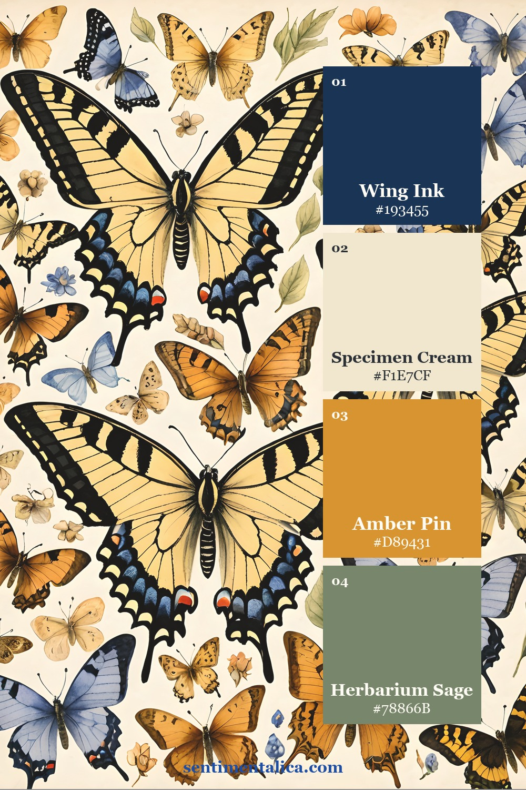
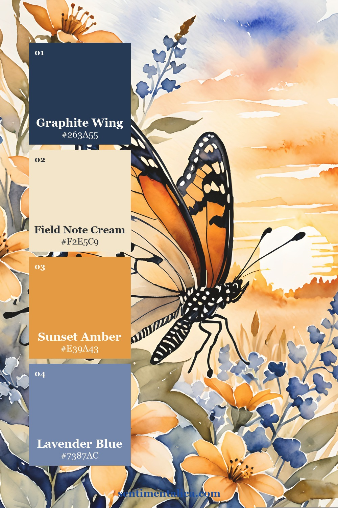
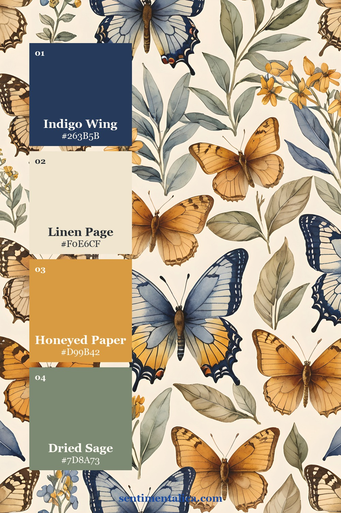

Butterfly pages do not need a rainbow of color to feel alive. A restrained naturalist palette lets the wing details, handwritten labels, and old-paper textures become the interest. The Butterfly Study printable collection is especially useful for this approach because its creams, khakis, ochres, and graphite notes already feel gathered from one field cabinet.
Below are three palettes sampled from three real listing compositions. Save the one that matches your journal mood, then use its four colors as an editing rule while choosing paper, thread, ink, and embellishments.
Palette one: the amber specimen box

Let Specimen Cream dominate the page, with Pressed Parchment for layered labels and torn mats. Moth Wing Taupe grounds the composition without the harshness of black, while Amber Pin adds the small warm spark. This palette suits specimen cards, library pockets, cabinet labels, and pages with generous writing space.

Palette two: graphite field notes

Use this version when you want a more scholarly page. Graphite Wing can appear in stamped numbers, fine borders, dark thread, or one moth silhouette. Herbarium Khaki connects the grayscale note to the warm paper. Keep Field Note and Aged Label close in value so the spread feels softly layered rather than striped.
One useful rule: repeat the darkest shade in three different sizes. A large focal insect, a medium label edge, and a tiny numeral will make the whole spread feel intentional.

Palette three: linen, honey, and dried grass

This is the warmest option. Start with Linen Page, layer Honeyed Paper, and add Dried Grass wherever you need an earthy middle tone. Limit Golden Ochre to about 10% of the spread. It looks especially effective in a small tab, a faux pin head, a postage accent, or one line of stitching.

How to keep a pale palette interesting
Color is only one kind of contrast. When your palette is subtle, create variety through texture and scale: smooth writing paper beside a deckled edge, a large butterfly beside tiny catalogue numbers, or a crisp label over a softly distressed background. Coffee-toned edges can work, but stop before every layer becomes the same brown.
The Butterfly Study pages give you coordinated focal images and paper elements, so the palette stays consistent even when the layout is richly layered. Print a palette card with your pages, choose one dark neutral, and let the delicate details carry the story.